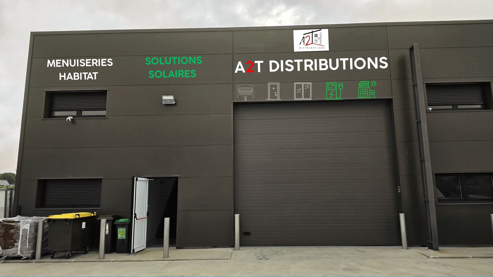
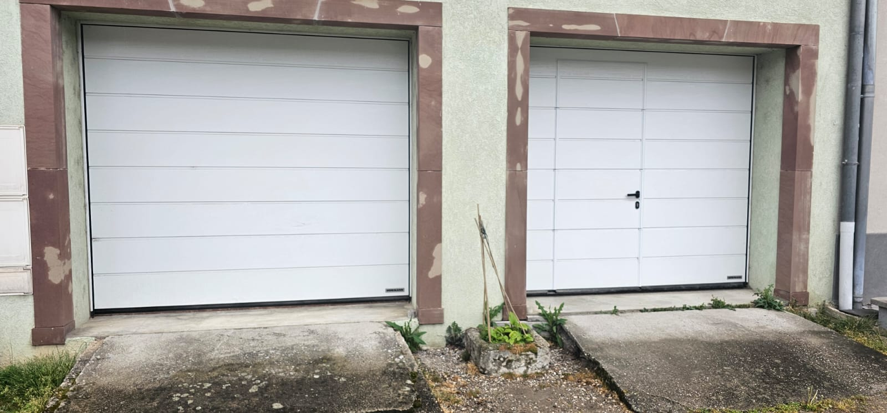
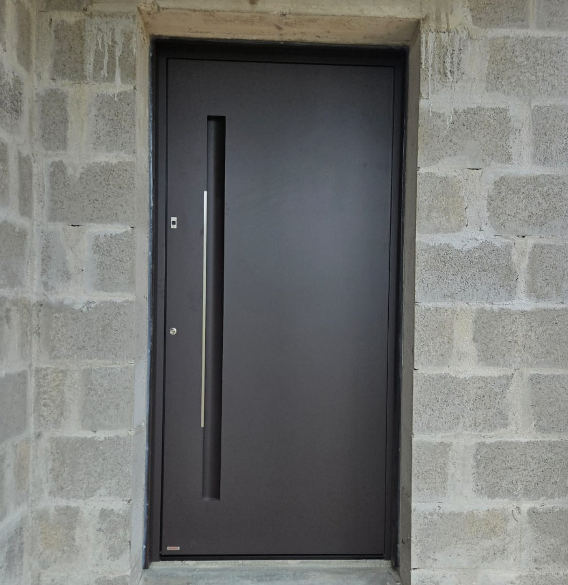

Notre base d'opérations est à Cléguér, à deux minutes de Lanester. Les délais d'intervention les plus courts de la région — devis sous 24h, pose sous 7 jours.
A2T Distributions est installé en Zone d'Activités de Kerchopine à Cléguér, en bordure immédiate de Lanester. C'est depuis là que nous gérons tous nos stocks Hörmann, Flexidoor, Pirnar et Tehni. Choisir A2T à Lanester, c'est bénéficier des délais les plus courts : visite technique le lendemain, livraison en 48h pour les modèles en stock.
Vous habitez Lanester, Brandérion, Kervignac, Caudan ou Inzinzac-Lochrist ? Nous connaissons votre territoire par cœur — ses lotissements, ses maisons individuelles, ses règles d'urbanisme locales.

Nous maintenons un stock de portes de garage Hörmann et Flexidoor dans nos locaux de Cléguér. Les modèles les plus demandés à Lanester — sectionnelle blanche 240×200, motorisation ProLift 600 — sont disponibles sans délai de commande. Idéal pour un remplacement urgent ou un chantier neuf rapide.

De plus en plus de maisons contemporaines de Lanester et de la périphérie choisissent la porte à pivot Tehni pour se démarquer. Un axe de rotation central, une ouverture à 180°, des dimensions jusqu'à 3 mètres — ça change une façade. Couplée à une porte de garage Hörmann assortie, le résultat est bluffant.

Notre dépôt est à 2 minutes. Devis gratuit le jour même, intervention rapide garantie.
Demander mon devis gratuit →